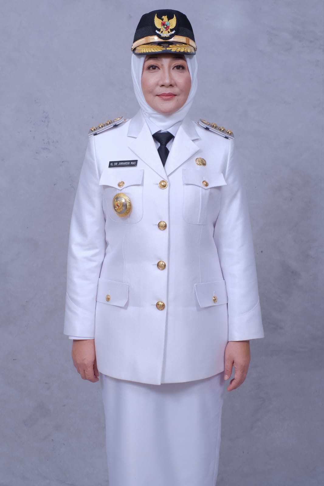
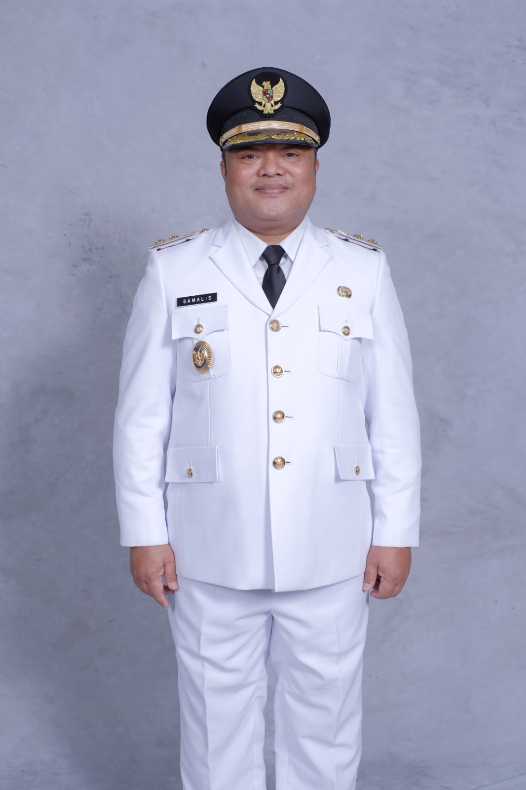

Bupati dan Wakil Bupati Kabupaten Berau

Hj. Sri Juniarsih Mas, M.Pd resmi dilantik sebagai Bupati Berau untuk masa jabatan 2021-2024 pada Senin, 31 Mei 2021.

H. Gamalis, SE resmi dilantik sebagai Wakil Bupati Berau untuk masa jabatan 2021-2024 pada Senin, 31 Mei 2021.